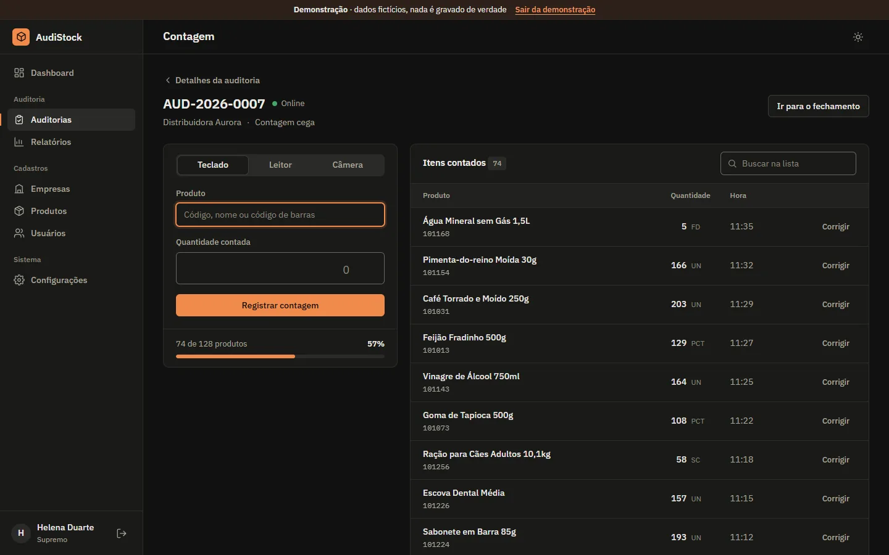

AudiStock
Stock counts on a phone, checked against the ERP.


On this page: 01Why it exists
Why it exists
The team that audited stock at some of the group’s companies reported many problems with AutoSystem’s stock count. I built AudiStock to work in a similar way to AutoSystem, solving the problems the operators complained about. For now, the AutoSystem balance is entered at closing; a direct integration is planned for a later stage.
Problem, system, and proof
Problem
Stock counts drew complaints from the auditors.
System
The team counts stock on a phone, enters the ERP balance at closing, and gets a report of shortages and overages in PDF, Excel, and CSV. An offline queue lets them count without internet.
Proof
130 tests
84 unit and database tests and 46 end-to-end, on GitHub Actions. Checked on 9 Nov 2026.
A closer look
-
Audits in progress
The progress of each count, a summary of the latest audit, and the largest shortages and overages relative to the balance.
-
Counts on a phone
Keyboard, barcode scanner, or camera, with an offline queue for counting without internet.
-
Shortages and overages vs. the ERP
At closing, the team enters the ERP balance. The report shows the system quantity, the counted quantity, and the difference for each item, and exports to PDF, Excel, and CSV.


How it was built
Architecture
AudiStock is HTML, CSS, and JavaScript in ES modules, with no framework and no build step, published as a static site. Data and login live in Supabase, and everything that changes a quantity (recording, correcting, closing, and deleting) is a Postgres function. A count that can't be uploaded waits in a queue in the device's IndexedDB. In the demo, js/demo.js takes the place of the Supabase client and keeps everything in the browser tab only.
View in code: README.md L176–185 supabaseClient.js L1–40 offline.js L1–24 schema.sql L324–392
- Scan on the phone
- IndexedDB queue
- Postgres function
- Close with ERP balance
- Discrepancy report
Technical decisions
Counts are added up inside the database
Every scan goes through the
registrar_contagemfunction, which locks the item's row (for update) and adds in a single transaction. The README records that, before it, 20 simultaneous scans of the same product ended up as 2; a test fires 20 at once on the demo database and checks for 20. Closing is also a single function:finalizar_auditoriawrites all balances and closes the audit together, and refuses if any item was counted or recounted after the screen opened.View in code: schema.sql L324–392 schema.sql L428–488 README.md L202–217 contagem.test.mjs L24–31
Permissions enforced in the database
I defined four roles (general administrator, administrator, auditor, and viewer) and wrote the rules as 24 RLS policies, by role and by company. Triggers prevent anyone from promoting themselves or changing a count that is already closed. Creating users goes only through an Edge Function with the service key, which never reaches the browser.
permissoes.sqlsigns in as each role and checks 54 rules.View in code: schema.sql L706–818 schema.sql L513–548 schema.sql L638–673 index.ts L1–30 permissoes.sql README.md L139–149
Hash-based security policy, no build
Each page carries a Content Security Policy in a meta tag: scripts run only from the site itself, from the exact library folders on cdnjs and jsDelivr, with pinned versions, and from inline scripts allowed by hash. The PDF and spreadsheet libraries are downloaded only when exporting or importing, verified with SRI.
csp.test.mjschecks every page, and the end-to-end tests fail if the policy blocks anything.View in code: contagem.html L5 README.md L188–198 csp.test.mjs supabaseClient.js L12–27
Challenge
An offline queue without double counts
A response lost on the network, or the same queue open in two tabs, could add the same scan twice. Each record carries an id_cliente generated on the device, the same one as the failed attempt, and the database notes in contagens_aplicadas what it has already applied. Only one tab sends at a time (Web Locks). A transient failure, such as the network or an expired session, holds the queue in order; any other rejection becomes "Not sent" without blocking the ones after it.
View in code: offline.js L1–24 offline.js L76–100 offline.js L168–207 contagem.js L495–527 schema.sql L110–117 fila.test.mjs
Testing
There are 84 unit and database tests with node:test: the real code in js/ runs in Node against the demo database, the queue uses an in-memory IndexedDB, and schema.sql and permissoes.sql run on Postgres in WebAssembly (PGlite), including on top of a database from the previous version. Playwright performs 46 end-to-end runs, on desktop and phone screens. GitHub Actions runs everything on every push to main and on every pull request.
View in code: package.json indexeddb.mjs L1–7 esquema.test.mjs L1–40 playwright.config.mjs L27–30 e2e testes.yml
Stack and links
Stack
JavaScript, Supabase (PostgreSQL + Auth), IndexedDB, PWA, jsPDF, ExcelJS, SheetJS, BarcodeDetector, node:test, PGlite, Playwright, GitHub Actions